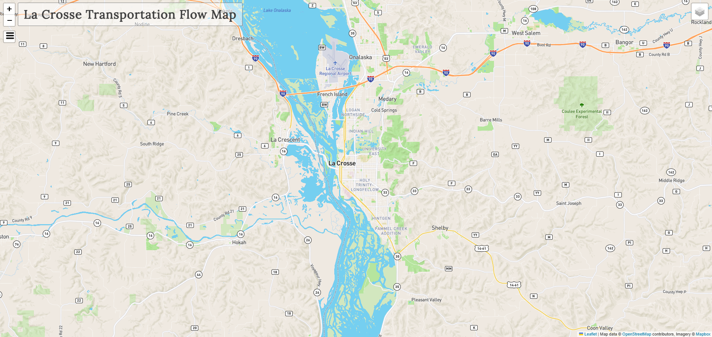

Spatial Database for Car Crashes
Finished web map product
This project was an undergraduate research project completed at UW La Crosse in conjunction with the Geography and Earth Science deparment, and Computer Science department. The main goal was to map the routes employees took from their houses to work every day. This data was acquired through a survey sent out to 8 different employers located within La Crosse. Important submission data included intersection closest to the employee's home, mode of transportation, average commute length, etc.. This project was presented at the Midwest Undergraduate Geography Symposium hosted at UW River Falls in May 2024.
Technologies Used
-- Python
-- ArcPy
-- Folium
-- Leaflet